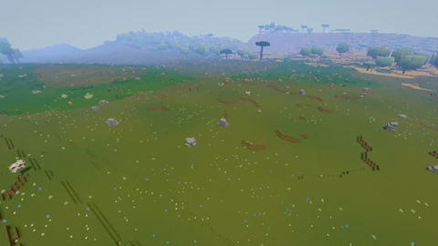

THE PLAYER WIKI
Voxelgame
A guide to building, making things and finding your way around the islands.
Press / to search, Enter for the first result, or Escape to clear.
New here? Start your first session.

Browse by topic
22 guides · 10 topicsGetting started
Your first world, creative and survival play, and saving your progress.
Controls
Find a key, understand the crosshair and adjust the camera.
Blocks and materials
Look up building materials, colours and links to their recipes.
Crafting
Open the crafting panel and look up ingredients and quantities.
Building
Place blocks, use doors and chests, and save structures for later.
Animals and mobs
Animal families, habitats, spawning, calls and interactions.
Biomes and exploration
Read the map, find your way home and explore islands, caves and weather.
Items and equipment
Tools, weapons, explosives, food and the items in your pack.
Vehicles
Build and launch a boat, take the helm and sail with the wind.
Troubleshooting
Installation, updates, saves, sound, display settings and common failures.
This wiki covers the base game. Guides carry source evidence and verification limits. Atlas collections retain their dated snapshots.
All guides · 195 features and their sources · What is still planned